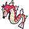

Access to:
South: Route 43
Utility:
Surf is required to access the Red Gyarados and obtain the Red Scale. Wild Pokémon can also be encountered here with Surf.
Cut is required to access Wesley, Cooltrainer Aaron, a Rare Candy, TM10 Hidden Power, and TM43 Detect. In Gold and Silver, Cut is also required to access a Max Ether. In Crystal, Cut is also required to access an Elixer.
Headbutt can be used to encounter wild Pokémon.
| Pokémon | Level | Notes | |
|---|---|---|---|
|
 |
Gyarados ♂ | 30 | Requires Surf. It is always male and shiny. |
| Item | Games | Location | Notes | ||
|---|---|---|---|---|---|
| Full Restore | G | S | C | In the dead-end southwest of the lake, accessible from the western part of Route 43 | Hidden. |
| Black Belt | G | S | C | Obtained from Wesley | Requires Cut. Wesley only appears here on Wednesdays. |
| Rare Candy | G | S | C | At the end of the western path west of the lake | Hidden. Requires Cut. It cannot be obtained while Wesley is present. |
| Max Ether | G | S | C | At the end of the middle path west of the lake | Requires Cut. |
| Elixer | G | S | C | At the end of the middle path west of the lake | Requires Cut. |
| TM10 Hidden Power | G | S | C | Obtained from the man in the northwestern house | Requires Cut. |
| TM43 Detect | G | S | C | At the end of the northeast path west of the lake | Requires Cut. |
| Ether | G | S | C | Obtained from the Fishing Guru for showing him a Magikarp | The first time the player shows him a Magikarp that is larger than 3'6", he will give them an Ether. After that, the player has to show him a Magikarp whose size is greater than the current record Magikarp in order for him to give them another Ether. |
| Elixer | G | S | C | Obtained from the Fishing Guru for showing him a Magikarp | The first time the player shows him a Magikarp that is larger than 3'6", he will give them an Elixer. After that, the player has to show him a Magikarp whose size is greater than the current record Magikarp in order for him to give them another Elixer. |
| Red Scale | G | S | C | Obtained after clearing the Red Gyarados | Requires Surf. |
| Max Potion | G | S | C | One tile north of the northeasternmost tile of the lake | Hidden. |
| Trainer | Party | Notes |
|---|---|---|
| Cooltrainer Aaron | Ivysaur lv.24 Charmeleon lv.24 Wartortle lv.24 |
Requires Cut. Only after clearing Team Rocket HQ. |
| Fisher Raymond | Magikarp lv.22 Magikarp lv.22 Magikarp lv.22 Magikarp lv.22 |
Only after clearing Team Rocket HQ. |
| Fisher Andre | Gyarados lv.27 | Only after clearing Team Rocket HQ. |
| Cooltrainer Lois | Skiploom lv.25 Ninetales lv.25 |
Only after clearing Team Rocket HQ. |